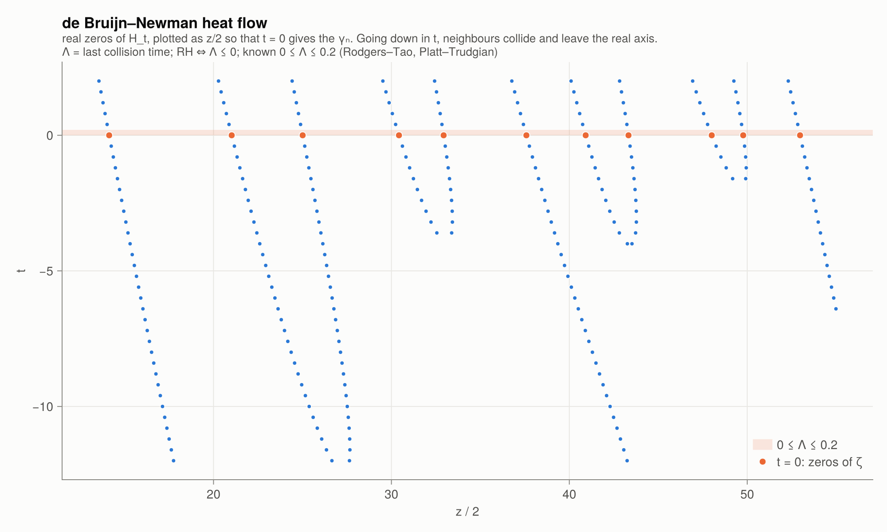

9 · The de Bruijn–Newman constant
Ξ as a Fourier transform
Riemann's $\Xi$ function has a Fourier representation with a positive, rapidly decaying kernel:
\[\frac18\,\Xi\!\left(\frac z2\right) = H_0(z) = \int_0^\infty \Phi(u)\cos(zu)\,du, \qquad \Phi(u) = \sum_{n\ge1}\left(2\pi^2 n^4 e^{9u} - 3\pi n^2 e^{5u}\right) e^{-\pi n^2 e^{4u}}.\]
debruijn_H(0, 10.0), Xi(5.0) / 8(0.034443749668025526, 0.03444374966802548)Running the heat equation
de Bruijn (1950) inserted a Gaussian factor:
\[H_t(z) = \int_0^\infty e^{t u^2}\,\Phi(u)\cos(zu)\,du .\]
$H_t$ solves the backward heat equation $\partial_t H = -\partial_z^2 H$. Its zeros move in time like particles with a pairwise interaction:
- as $t$ increases, the real zeros repel and stay real;
- as $t$ decreases, neighbouring zeros attract, collide, and leave the real axis as a complex-conjugate pair.
de Bruijn and Newman (1976) showed that there is a constant $\Lambda$ such that
\[H_t \text{ has only real zeros} \iff t \ge \Lambda .\]
Since $H_0$ is $\Xi$ in disguise, RH ⇔ Λ ≤ 0.
heat_flow_zeros(0.0; zmax = 70) ./ 2 # = γ₁, γ₂, γ₃ …5-element Vector{Float64}:
14.134725141734693
21.022039638771552
25.010857580145693
30.424876125859516
32.93506158773919heat_flow_zeros(-6.0; zmax = 70) ./ 2 # pairs have collided and left the axis3-element Vector{Float64}:
15.911032863511682
23.45170512026346
26.667242648650536plot_heat_flow()
In the plot you can watch, for example, the pair near $\gamma \approx 30.4, 32.9$ and the pair near $\gamma \approx 48.0, 49.8$ merge as $t$ decreases, while isolated zeros simply drift.
What is known
- Newman's conjecture (1976): $\Lambda \ge 0$, that is, "RH, if true, is only barely true". It was proved by Rodgers and Tao (2020), using the fact that zeros which are too regular are incompatible with the GUE-type statistics of Chapter 7.
- Upper bounds: $\Lambda \le 1/2$ (de Bruijn 1950), $\Lambda < 1/2$ (Ki–Kim–Lee 2009), $\Lambda \le 0.22$ (Polymath15, 2019), $\Lambda \le 0.2$ (Platt–Trudgian 2021).
So $0 \le \Lambda \le 0.2$, and RH ⇔ Λ = 0.
$H_t(z)$ decays like $e^{-\pi z/8}$, while the integrand has size about 1, so Float64 would lose all significant digits by $z \approx 60$. debruijn_H uses the trapezoidal rule (exponentially accurate here) in BigFloat arithmetic, and caches the $\Phi$ grid.